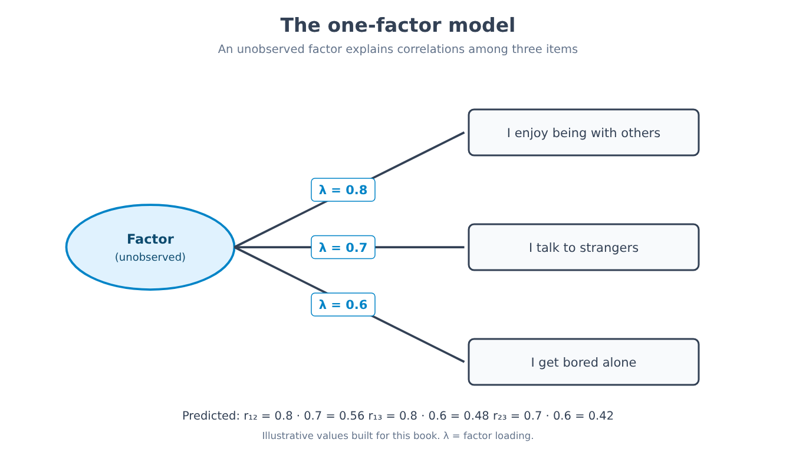
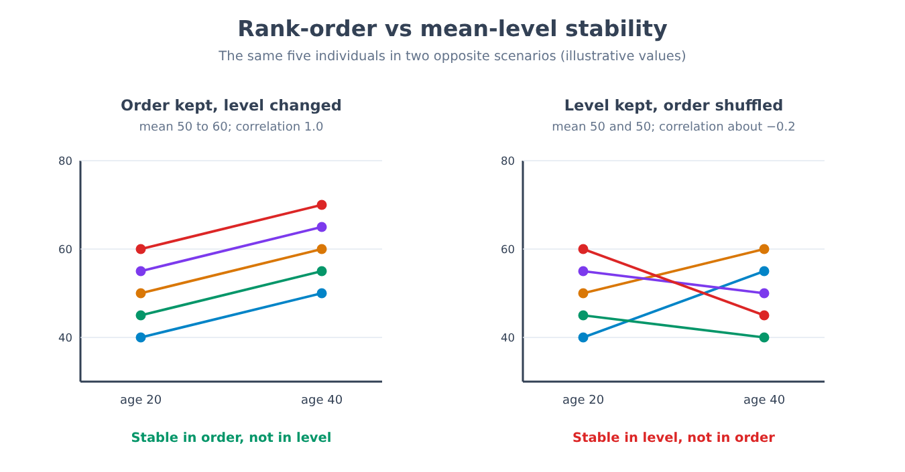
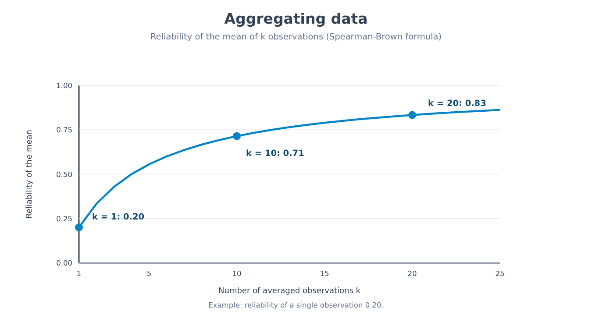
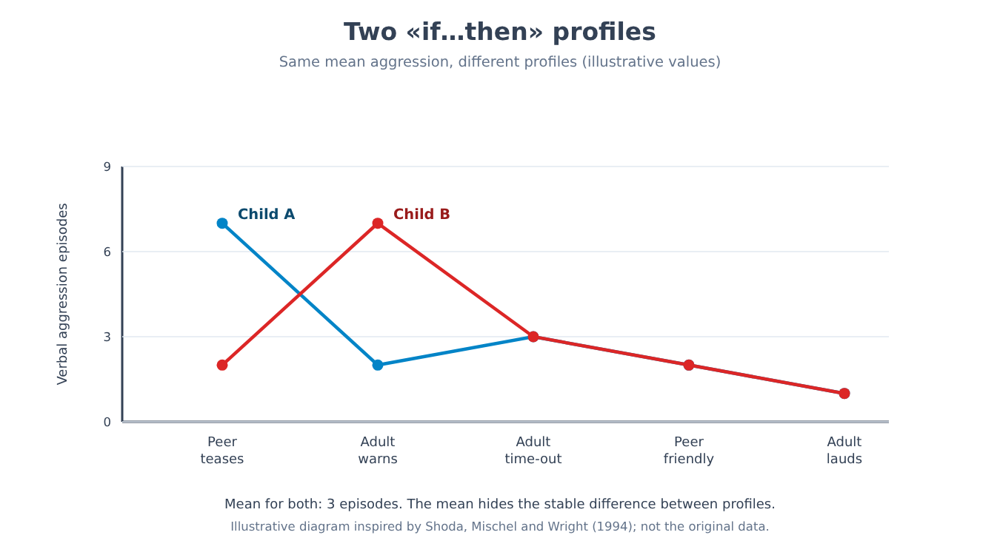
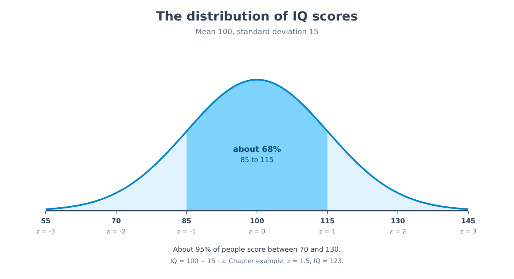
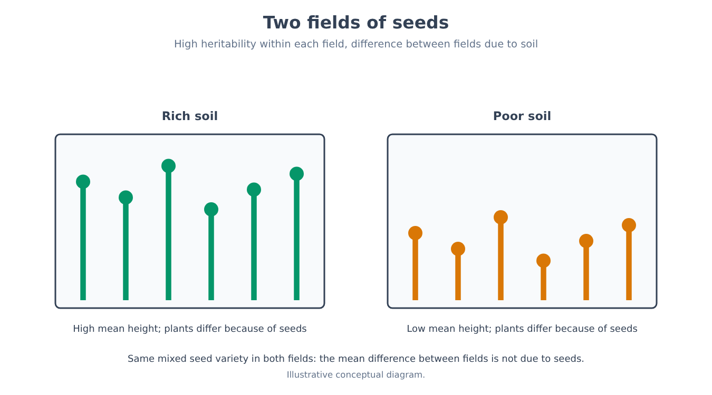
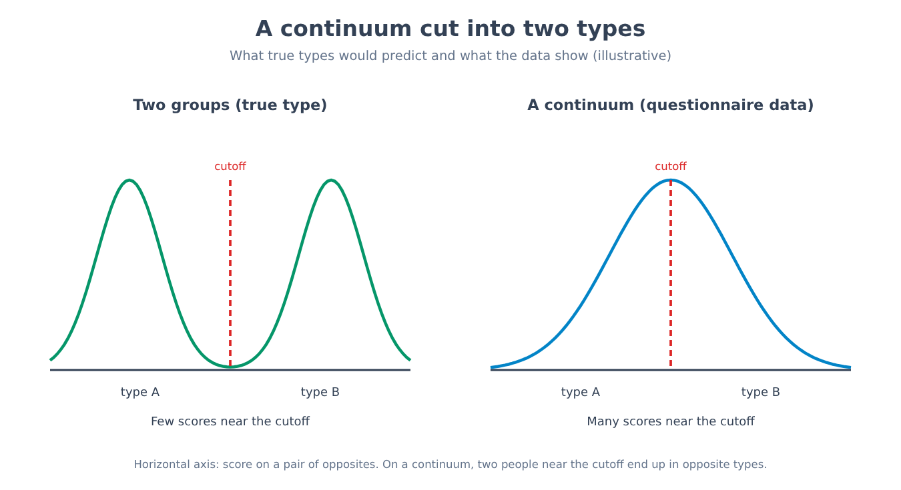

Part X. Personality and individual differences
Chapter 61 — Describing differences
[IN A NUTSHELL]
To study differences in personality, we first have to decide how many dimensions to use to describe them, and which ones. This chapter sets out the idea that languages have already condensed these dimensions into the words we use to describe people, the statistical technique (factor analysis) used to look for the structure behind thousands of adjectives, the five-factor model that emerged from it, and the reasons why that model is a useful description rather than a discovery about how the mind is built.
The previous part closed with a question: if people change over the course of their lives, what remains stable in the differences between them? To answer it, we first need a way of describing those differences, and this is less obvious than it seems. Try describing a friend in no more than five words. You will probably choose adjectives such as “punctual,” “shy,” “generous,” “anxious.” Each of those adjectives captures something that other adjectives capture only in part: a punctual person is often also tidy, and a shy person is rarely also sociable. If Italian, like every other language, offers thousands of words of this kind, the question is whether behind all those words there is a small number of dimensions, and how many.
The Lexical Hypothesis
The lexical hypothesis holds that the individual differences most important for social life have settled into language: if a difference between people matters in everyday relationships, people will have felt the need for a word to name it. A method follows from this, which consists in starting from the dictionary rather than from theory. It is a cautious choice: no researcher has to decide in advance which traits exist, and the vocabulary of a language represents the work of many generations of observers.
[THE EXPERIMENTAL DESIGN]
The first major census was carried out by Gordon Allport and Henry Odbert (1936), who started from an English dictionary of about four hundred thousand words and extracted 17,953 terms capable of describing a person's behavior or personality. They divided them into categories: the category of traits proper, that is, words indicating stable ways of behaving (“shy,” “generous”), ended up with 4,504. The work of reduction continued over the following decades. Warren Norman (1963, 1967) analyzed the terms of that list, reduced their number to 2,797 trait-descriptive words, and found a five-factor structure. The method, in its broad outlines, is the same in all lexical studies: a group of people rate themselves, or people they know, on a long list of adjectives; the correlations between adjectives are calculated, two at a time; then a factor analysis looks for the few sets of adjectives that vary together. The question the experiment answers is not “how is the mind built,” but “into how many statistically distinct dimensions are the descriptions people give of themselves and others organized.”
The number 17,953 contains everything the dictionary has to say about personality, including passing moods (“furious”), moral judgments (“wicked”) and rare terms. The step down to 4,504 and then to 2,797 shows that the first decision in research of this kind, which words to include, is a choice and not a given. Other choices (to include or exclude value judgments, terms about the body, rare terms) have led to different lists, and part of the differences between the models discussed later stems from this.
Factor analysis, explained from scratch
For four thousand adjectives not to become four thousand dimensions, we need a statistical technique that recognizes which adjectives go together. The starting point is the correlation coefficient, already defined in chapter 4. If I ask the same questions of many people (“do you enjoy being in company?”, “do you talk easily with strangers?”, “do you get bored when you are alone?”) and calculate the correlation between the answers, I find that they are all positive: those who answer yes to the first tend to answer yes to the others as well. Factor analysis starts from the hypothesis that this common tendency has a single source, a variable that is not directly observed, the factor, which influences all three answers. The factor is not measured: it is inferred from the fact that the answers vary together.
[FORMULA]
In the simplest model, with a single factor, the correlation between two questions i and j is the product of their factor loadings:
r_ij = λ_i · λ_j
Where:
• r_ij is the observed correlation between question i and question j;
• λ_i (lambda) is the factor loading of question i: the correlation between question i and the unobserved factor;
• λ_j is the factor loading of question j, defined in the same way;
• λ_i² is the share of the variability of question i that the common factor explains; the rest is specific to that question, or is measurement error.
Worked example. Suppose the loadings of the three questions in the example above are λ₁ = 0.8, λ₂ = 0.7 and λ₃ = 0.6. The model predicts the correlations: r₁₂ = 0.8 · 0.7 = 0.56; r₁₃ = 0.8 · 0.6 = 0.48; r₂₃ = 0.7 · 0.6 = 0.42. The share of variability explained by the factor is λ² = 0.64, 0.49 and 0.36 for the three questions. The actual procedure goes in the opposite direction: the three correlations are observed and the loadings are derived from them. With three questions a single step is enough: λ₁² = (r₁₂ · r₁₃) / r₂₃ = (0.56 · 0.48) / 0.42 = 0.64, hence λ₁ = 0.8. With hundreds of adjectives the calculation is the same in spirit, but it requires a computer.
With more than one dimension, the model has several factors and each question has a loading on each of them. Three decisions remain that belong to the analyst and that the calculation does not make on its own. The first is how many factors to retain: there are criteria (for example, keeping only the factors that explain more variability than a single question does, or stopping where the curve of explained variability stops dropping sharply), but different criteria can suggest different numbers. The second is rotation: the mathematical solution is not unique, and among the solutions that fit the data equally well, one chooses the one in which the factors are easiest to interpret. The third is the name to give each factor, which is an act of interpretation based on the adjectives with the highest loadings. None of these three choices is arbitrary, but none is dictated by the data alone.

The Five-Factor Model
From lexical studies and questionnaire studies there emerged, in many English-speaking samples and then in samples speaking other European languages, a set of five dimensions, called the five-factor model or the “Big Five.” The five dimensions, with the labels used in the literature, are: extraversion, which concerns sociability, energy and stimulation seeking; agreeableness, that is, cooperation, trust and compassion; conscientiousness, which concerns organization, reliability and self-discipline; neuroticism, the tendency to experience negative emotions such as anxiety, sadness, irritation; and openness to experience, that is, curiosity, imagination and interest in new ideas. Each is a continuous dimension: every person has a position on each one, and the great majority fall in the middle, as with height.
[COMMON BELIEF]
“A personality test assigns you to a type.” In the five-factor model there are no types: there are five scores, each on a continuous scale. Saying “you are an extravert” means saying that your position on that scale is above the midpoint, but the difference from someone just below it is as small as that between two people who are 175 and 176 centimeters tall. For types to exist as distinct groups, the scores would have to cluster in separate groups, and the data do not show that shape. Chapter 65 returns to this topic.
The model is a description, and it should be kept distinct from an explanation. Saying that a person has a high conscientiousness score summarizes how they behave (tidy, punctual, reliable) without saying why. The factor is a statistical variable that summarizes correlations, and the step from “these behaviors vary together” to “there is something in the person that causes them” is a leap that factor analysis alone does not license. The five dimensions are a very effective descriptive tool; whether they correspond to five distinct components of the brain is a different question, which the lexical method does not answer.
[NUMBERS]
• 17,953: terms identified by Allport and Odbert (1936) in the dictionary for describing behavior or the person.
• 4,504: those classified as trait terms.
• 2,797: the trait terms remaining after Norman's reduction (1963, 1967).
• 5: the number of factors Norman's analysis found; the same number has emerged in many later studies with Western samples, although the number also depends on the analyst's choices.
How universal it is, and what the alternatives are
[CONTROVERSIAL QUESTION]
If the five dimensions captured a fundamental aspect of human nature, they should be found in every population. In many countries, particularly industrialized ones with high levels of schooling, the structure is recovered fairly well. A study of the Tsimane, a people of horticulturalists and foragers in Bolivia (Gurven and colleagues, 2013), reported instead that the five-factor model did not emerge clearly, and that in its place the structure was simpler, with a smaller number of dimensions. The possible explanations are several and not mutually exclusive: a genuinely different structure in cultures with little schooling and little life in large-scale societies; the fact that the questions, the response scales and the way the questionnaire is administered are designed for readers used to tests; difficulties in translating the adjectives. The result has been debated, and it is not yet clear how much weight each explanation carries. The cautious conclusion is that the five factors describe well the structure of questionnaire responses in many populations, and that “universal” is, for now, too strong a word.
One alternative that has been successful is the HEXACO model, presented by Ashton and Lee (2004), which keeps five dimensions (calling one of them “emotionality,” with a meaning somewhat different from neuroticism) and adds a sixth, honesty-humility: sincerity, fairness, lack of greed and of pretentiousness. The argument is that when the lexicons of several languages are studied, not only English, this dimension appears regularly and cannot be reduced to the others. The choice between five and six is also a concrete example of the three decisions of factor analysis: it depends on which adjectives are included and on how many factors one decides to retain.
[DOES IT STILL HOLD?]
The five-factor model as a description holds: the dimensions are found in many samples, are measured with reliable questionnaires and predict, moderately, outcomes such as academic performance or health. As a theory of the causes of personality it does not hold, because it was not created to explain. As a universal and definitive structure, it holds only in part: it depends on the sample, the method and the language, and the alternatives with six dimensions or a different number have arguments of their own.
[MINI-TIMELINE]
• 1936: Allport and Odbert catalog 17,953 terms in the dictionary.
• 1963-1967: Norman reduces the list and finds five factors.
• 1980s and 1990s: the five factors are adopted as a descriptive standard and measured with questionnaires.
• 2004: Ashton and Lee propose the six-dimension HEXACO model.
• 2013: the study of the Tsimane calls the universality of the structure into question.
It remains to be seen how stable these dimensions are over time, how much they depend on the moment and situation in which the person is observed, and how good our ways of measuring them are. These are the three questions of chapters 62, 63 and 65.
[KEY POINT OF THE CHAPTER]
• The lexical hypothesis derives the dimensions of personality from vocabulary: Allport and Odbert (1936) found 17,953 descriptive terms, 4,504 of them trait terms.
• Factor analysis looks for the unobserved variable that explains the correlations among many items: in the one-factor model the correlation between two items is the product of their loadings (r_ij = λ_i · λ_j).
• The number of factors, the rotation and the names of the factors are decisions made by the analyst, not results of the calculation.
• The five-factor model (extraversion, agreeableness, conscientiousness, neuroticism, openness) describes differences with five continuous dimensions, not with types.
• It is a description and not an explanation: from the fact that behaviors vary together it does not follow that there is a single cause within the person.
• The universality of the structure is debated (study of the Tsimane); the HEXACO model adds honesty-humility.
Chapter 62 — Stability and change
[IN A NUTSHELL]
“Stable” can mean two different things: that people keep their place in the ranking relative to others, or that their average level does not change. This chapter separates the two meanings, shows why a stability coefficient must be corrected for measurement error, sets out what longitudinal data show about maturation and life events, and explains why we cannot infer from the average trend what will happen to any one person.
Ask someone whether personality changes over the years and you will get two opposite answers, often from the same person on the same day: “my brother has always been like that” and “since he had kids I don't recognize him.” The two statements do not contradict each other, because they are about different things. To understand which data support each, we need to distinguish two ways of being stable.
Rank-Order stability and mean-level stability
Rank-order stability concerns relative position: is the person who was more extraverted than others at twenty still so at forty? It is measured by the correlation between scores on the same measure at two points in time. Mean-level stability, or mean-level change, concerns instead the group's average score: at forty, are people on average more or less extraverted than at twenty? The two are independent. An example with constructed numbers: five people have scores of 40, 45, 50, 55 and 60 at age twenty; at forty, each has gained exactly ten points (50, 55, 60, 65, 70). The mean level has risen from 50 to 60, while the order is identical and the correlation between the two measures is 1.0. In the opposite case, the group could have the same mean at twenty and at forty, and the people could have largely reshuffled: a correlation near zero and an unchanged level.

[COMMON BELIEF]
“By thirty, personality is set and no longer changes.” The two halves of this sentence are tested against different data. Rank-order stability does indeed increase from childhood to young adulthood and then levels off at high values: recent longitudinal meta-analyses indicate a plateau around age twenty-five, with no evidence of further increases afterward. But a high value is not one: the order is largely preserved, not entirely. And the mean level keeps moving even after thirty, as shown below. The correct picture is “relatively stable and never closed.”
Measuring stability: measurement error
The rank-order stability coefficient has a limitation that chapter 3 already introduced when discussing reliability: no measure is perfect. If an extraversion questionnaire, even when administered twice on the same day, correlates 0.80 with itself, the correlation between two measurements ten years apart cannot exceed that value, even if the person had not changed at all. Part of the difference between the two measurements is error, not change.
[FORMULA]
The correction for attenuation estimates the correlation that would be observed between the two scores if they were free of measurement error:
r_true = r_observed / √(r_xx · r_yy)
Where:
• r_observed is the correlation actually measured between the first and second measurement;
• r_xx is the reliability of the first measurement (for example its short-interval test-retest);
• r_yy is the reliability of the second measurement;
• √ indicates the square root of the product of the two reliabilities.
Worked example. A conscientiousness scale is administered at age twenty and again at thirty, and the correlation is 0.60. The reliability of the scale, measured over a short interval, is 0.80 on both occasions. Then: r_true = 0.60 / √(0.80 · 0.80) = 0.60 / 0.80 = 0.75. Part of the observed “instability” (from 1.0 to 0.60) is therefore measurement error; the rest, from 1.0 to 0.75, is actual change, or the effect of other sources of difference between the two occasions.
The correction should be used with caution. It assumes that reliability has been estimated well, and if reliability is underestimated, true stability is overestimated. Moreover, short-interval reliability also includes the part of the variation that depends on the moment (that day's mood), which is part of the person but is not a stable trait. The corrected number is an indication, not a truth.
Mean-Level change: the maturity principle
[THE EXPERIMENTAL DESIGN]
Meta-analyses of personality change gather longitudinal studies: the same people are measured several times with the same instruments, in some cases over decades. For each age interval, the average change in each trait is expressed in standard deviation units, so that different traits and studies can be compared. The meta-analysis by Brent Roberts, Kate Walton and Wolfgang Viechtbauer (2006) combined the results of dozens of longitudinal studies with this design. The advantage over the cross-sectional comparison (already discussed in chapter 60) is that each person is compared with themselves: the difference does not depend on belonging to a different cohort. The limitation is that even a longitudinal sample loses participants over time, and those who drop out are not random.
The result, in brief, is that from adolescence to middle age, and especially between 20 and 40, conscientiousness and emotional stability (the opposite pole of neuroticism) tend to increase on average; agreeableness, in that meta-analysis, changed mainly in old age, while for extraversion and openness the picture depends on the facet considered, with some rising and others declining. Change is concentrated in youth and early adulthood and continues in a milder form afterward. The overall pattern has been called the maturity principle, because the changes go in the direction of what is considered maturity: more self-control, more reliability, less emotional reactivity. The most recent meta-analyses confirm that average changes go toward greater maturity, with magnitudes that vary from one trait to another.
[CONTROVERSIAL QUESTION]
Why does it happen? One explanation is biological: brain maturation continues beyond adolescence (chapter 60), and a biological process of this kind is plausible. Another is social: the social investment principle holds that entering adult roles such as work, partnership and parenthood demands and rewards reliable and responsible behavior, and that these behaviors, repeated, modify traits. The two hypotheses are not mutually exclusive, and the available data are largely observational, so they do not allow the two to be separated. We know that on average there is a change toward maturity; whether its cause is biology, social roles, or their interaction is an open question.
Life Events
[THE EXPERIMENTAL DESIGN]
To see whether an event changes personality, the natural comparison is between the same person before and after the event. The study by Jule Specht, Boris Egloff and Stefan Schmukle (2011) used data from a large German panel representative of the population (the German Socio-Economic Panel, SOEP), in which more than 14,000 people responded every year, with traits measured on two occasions, in 2005 and 2009, and life events recorded in the four intervening years. Those who had experienced an event (a marriage, a divorce, the birth of a child, job loss) were compared, in terms of trait change, with those who had not. The question concerned not only whether there was a difference, but how large it was and how long it lasted.
The results of studies of this kind have a consistent shape. The effects of individual events on traits are generally small, on average smaller than popular narrative would expect, and they vary from person to person, in some cases in opposite directions; some are transient, and the trait returns toward its previous level after a few years. There is, however, an important limit to interpretation: this is not an experiment, and those who experience a given event are not chosen at random. People who marry, change jobs or have children already differ, before the event, from those who do not, and this too is why the before/after comparison is not a pure causal comparison. The useful descriptive finding remains: major events shift personality less than people believe.
Can We Change on Purpose?
A practical question is whether targeted interventions, such as psychotherapy, can modify traits. A meta-analysis of interventions by Roberts and colleagues (2017) reported that traits change measurably during or after interventions, especially emotional stability and especially in clinical settings. How long the change lasts, how specific it is to certain interventions, and how much it is influenced by the selection of published studies are questions on which research is still ongoing. For now, it can be said that personality is not immutable and that deliberate change is possible; the typical magnitudes and their duration are less well known.
Stable does not mean genetic
One last distinction. The fact that a trait is stable, and that much of its variability is associated with genetic differences (heritability estimates for the Big Five from twin studies, with the caveats of chapter 27, range from about 40% to 60%: openness 57%, extraversion 54%, conscientiousness 49%, neuroticism 48%, agreeableness 42%), does not imply that the trait cannot be modified. Heritability describes where the difference between people in a population comes from; stability describes how much the order is preserved over time. They are two different questions, and the first does not answer the second. Not even attachment, whose only moderate continuity chapter 57 has shown, passes from childhood to adulthood as a fixed imprint.
[MIND THE LEAP]
“On average, conscientiousness increases between twenty and thirty” is a statement about the group. It does not say that the same happens to each individual: within a group whose mean rises slightly, there are people who rise a great deal, people who stay the same and people who decline. The step from “the group changes this way” to “you will change this way” is a leap, and the value of rank-order stability itself refutes it: a correlation of 0.75 leaves a lot of room for positions to shift.
[NUMBERS]
• About 25 years: the age after which, in recent longitudinal meta-analyses, no further increases in rank-order stability are observed.
• 0.60 → 0.75: the chapter's example, where the correction for measurement error (reliability 0.80) shifts the estimated stability.
• 42%–57%: heritability estimates for the five traits in a review of twin studies (self-reports), not a measure of how fixed the trait is.
[DOES IT STILL HOLD?]
High rank-order stability in adulthood holds in many samples. The idea that it keeps increasing until middle age has been replaced, in more recent analyses, by that of a plateau around age twenty-five. The maturity principle holds as an average trend, with large individual differences. The causal explanations (biology, social investment) remain hypotheses that have not been disentangled.
[KEY POINT OF THE CHAPTER]
• Rank-order stability (relative position) and mean-level stability (average score) are independent: one can occur without the other.
• Rank-order stability increases from childhood to young adulthood and then levels off around age twenty-five; it is never, however, equal to one.
• Part of the observed instability is measurement error: r_true = r_observed / √(r_xx · r_yy), with the caveat that reliability must be estimated well.
• On average, from adolescence to middle age, conscientiousness, agreeableness and emotional stability increase (the maturity principle); the causes, biological or social, have not been disentangled.
• Life events shift traits less than people believe, with effects that are small, variable, often transient, and found in non-experimental studies.
• What will happen to an individual does not follow from the average trend; heritability does not measure how fixed a trait is.
Chapter 63 — The person-situation debate
[IN A NUTSHELL]
If personality is stable, a person's behavior should be predictable from a trait. Yet the correlations between a trait and a single behavior are modest. This chapter sets out the critique that followed, the four responses that have been given to it (aggregating, comparing with the effects of situations, measuring variability within the person, looking for “if… then” consistencies) and the middle position the debate has reached.
Imagine you know that a colleague of yours scores high in agreeableness. Do you predict that today they will help another colleague who is in difficulty? The intuitive answer is yes, and this intuition is the basis of every use of personality: using a trait to anticipate what a person will do. The problem is that when this intuition was tested against data, the link turned out to be much weaker than common sense would suggest.
The Critique
In 1968 Walter Mischel published a review of the data in which he observed that the correlations between a trait measure and a concrete behavior in a specific situation rarely exceeded 0.30, a value that came to be called the “personality coefficient.” Behind this critique lay older studies. The best known is that of Hugh Hartshorne and Mark May (1928), who observed thousands of children in honesty tests across different situations (copying on an assignment, stealing money, cheating at a game). The result was that the correlation among the tests was low: a child who cheated in one situation did not, for that reason, cheat in the others. If honesty had been a trait that shows itself everywhere, the tests should have correlated strongly.
[COMMON BELIEF]
“An honest person is always honest, and a dishonest one is always dishonest.” Hartshorne and May's data point to a different picture: the same person behaves differently in different situations, and behavior in one situation predicts little about behavior in another. This does not mean that people are all the same or that honesty does not exist; it means that the idea of a trait expressed uniformly in every circumstance is, as a description of single behaviors, false.
Mischel's critique called into question the very project of describing people in terms of stable traits: if traits predict so little, perhaps the stability we attribute to people is partly an impression of observers, and behavior depends mainly on the situation. Between the 1970s and the 1990s, trait proponents and critics exchanged responses, which can be grouped into four.
First response: Aggregate
A person's behavior on a single occasion is shaped by many things: the mood of the moment, who is present, what has just happened. A single observation is therefore an unreliable measure of the trait, exactly as a single questionnaire item is an unreliable measure of the scale. If one averages over many occasions, the random fluctuations cancel out and the stable part emerges. Seymour Epstein (1979) showed that when behavior is averaged over many days, its correlation with other measures rises markedly.
[FORMULA]
The Spearman-Brown formula estimates the reliability of a measure obtained as the mean of k observations, starting from the reliability of a single observation:
ρ_k = k · ρ / (1 + (k − 1) · ρ)
Where:
• ρ_k (rho) is the reliability of the mean of k observations;
• ρ is the reliability of a single observation, that is, the expected correlation between two observations of the same kind;
• k is the number of observations averaged (days, situations or items).
Worked example. Suppose the correlation between behavior on one day and behavior on another day is 0.20, a plausible value for a single behavior. With k = 10 days: ρ₁₀ = 10 · 0.20 / (1 + 9 · 0.20) = 2.0 / 2.8 ≈ 0.71. With k = 20 days: ρ₂₀ = 20 · 0.20 / (1 + 19 · 0.20) = 4.0 / 4.8 ≈ 0.83. The same trait that predicts little from a single day is measured much more reliably when averaged over twenty days. The gain diminishes as k grows.

Aggregation solves part of the problem, but not all of it, and it is important to say clearly what it solves. It shows that traits predict average behavior over many occasions well. It does not make predictable what a person will do on a single occasion, and that is precisely what everyday intuition tries to anticipate.
Second response: compare with the situation
David Funder and Daniel Ozer (1983) converted into correlations the results of some classic social psychology experiments, those that show the strong effect of the situation, and observed that the effect sizes were of the same order as those of traits, around 0.30-0.40. A very large meta-analysis of social psychology (Richard and colleagues, 2003) found that the average effect of situational factors across all the fields studied is on the order of 0.20 in terms of correlation. The comparison changes how the “personality coefficient” should be read: 0.30 is not low compared with what psychology manages to explain with any other kind of factor. The same caution as in chapter 5 applies here too, however: the effect sizes cited come largely from original studies, and replications tend to find smaller effects.
One arithmetic fact must be kept in mind: a correlation of 0.30 means that the trait shares about 9% of its variability with the behavior (0.30² = 0.09). That 9% is both “little,” because it leaves 91% to other things, and, in a context where almost nothing predicts better, a result that by itself does not allow us to say the trait is useless.
Third response: variability within the person
Another objection concerns the very idea that a trait is a fixed level. William Fleeson (2001) had groups of people complete, for many consecutive days and several times a day, brief reports of their recent behavior (how extraverted they had been, for example). The result is that the same person varies a great deal from one moment to the next: within-person variation is large, of the same order of magnitude as the variation between different people. At the same time, each person's average over time is stable and distinguishes people from one another. The trait is then reconceived as a distribution of states: everyone behaves in an extraverted way at some times and in a reserved way at others, but with their own frequency and range. This picture is more faithful to the data than that of the fixed level.
Fourth response: hidden consistency, “if… then” signatures
The most original response turned the question around. Walter Mischel and Yuichi Shoda argued that an individual's consistency should not be sought in behaving the same way in every situation, but in having a stable profile of how their behavior changes with the situation: an “if… then” signature.
[THE EXPERIMENTAL DESIGN]
In the study by Yuichi Shoda, Walter Mischel and Jack Wright (1994), children aged between seven and thirteen spent six weeks at a residential summer camp, where they were observed unobtrusively during daily life, for an average of about 167 hours of observation each. Observers coded the child's behavior in five types of interpersonal situation: three negative (a peer teasing, provoking or threatening the child; an adult warning the child; an adult imposing a time-out) and two positive (a peer making a positive social approach; an adult praising the child). For each combination, the frequency of behaviors such as verbal aggression, compliance, whining and prosocial talk was recorded. A profile was thus built for each child: how much verbal aggression they showed in each of the five situations. The question was whether the profile repeated itself over time, comparing it across different parts of the summer.
The profiles were stable. The average stability of the profiles, that is, how much a child's profile in one part of the summer resembled their profile in another part, was about 0.47 for verbal aggression, 0.41 for compliance, 0.28 for whining and 0.19 for prosocial talk. Two children could show the same average amount of verbal aggression and behave very differently: one became aggressive mainly when a peer provoked them, the other when an adult warned them. Looking only at the average, the two appeared identical, and the differences between them, which were stable, disappeared. This is why, according to the authors, behavior does not appear inconsistent: it is consistent at a level that trait analysis does not see.

The numbers should be read carefully: the stability of the profiles is moderate, and for some behaviors low. The result does not show that signatures are the fundamental form of personality; it shows that, beyond the average level, there is a stable part of behavior that depends on the situation and bears an individual imprint. This is a single setting, children at a camp, and replications in other contexts are fewer than those on traits.
Where the debate has arrived
[CONTROVERSIAL QUESTION]
The discussion did not end with a winner but with a middle position, interactionism: behavior depends on the person, on the situation and on their interaction, that is, on the fact that different people react differently to the same situation. The question of what a trait is remains open. For one position, traits are real dispositions that cause behavior. For another, they are statistical summaries of observed regularities, useful for describing and predicting but lacking a causal reality of their own. The data considered in this chapter are compatible with both readings, and for this reason the discussion cannot be settled with more data of the same kind.
The practical conclusion is twofold. When we want to know what a person will be like on average, across many occasions, traits work well. When we want to know what they will do in a specific situation, the trait alone tells us little, and it matters to know also which situation it is and how that person tends to react to that kind of situation. The great experimental demonstrations of the power of the situation, to which Part XI devotes chapter 66, should be read in light of this balance: they show how much the situation matters, not that the person does not matter.
[MIND THE LEAP]
From the fact that the correlation between a trait and a single behavior is 0.30, it does not follow that the trait does not exist, nor that people are interchangeable. From the opposite fact, that the average over twenty days is well predicted by the trait (0.83 in the example), it does not follow that we can predict what a person will do tomorrow. These are two levels of analysis, and the question being answered changes at each level.
[NUMBERS]
• 0.30: the “personality coefficient” cited by Mischel (1968) as the ceiling of the correlation between a trait and a specific behavior.
• 9%: the share of variability shared by a correlation of 0.30 (0.30² = 0.09).
• 0.20 → 0.71 → 0.83: reliability of a single observation, of the mean of 10 and of the mean of 20 (Spearman-Brown formula, example values).
• 167 hours: average observation per child in the camp study (Shoda, Mischel and Wright, 1994); profile stability from 0.19 to 0.47 depending on the behavior.
[DOES IT STILL HOLD?]
The principle of aggregation holds, because it is a mathematical consequence of measurement error. The comparison with situational effects holds in substance, with the reservation that both magnitudes come from original studies. The conception of the trait as a distribution of states has been confirmed by studies using repeated sampling throughout the day. The case for “if… then” signatures rests on a few high-quality studies and has been replicated less; its core finding (part of consistent behavior is tied to the situation) is less disputed than its generality.
[MINI-TIMELINE]
• 1928: Hartshorne and May show the low correlation between honesty tests in different situations.
• 1968: Mischel summarizes the critique, with the ceiling of about 0.30.
• 1979: Epstein shows the role of aggregation.
• 1983: Funder and Ozer compare the effect sizes of person and situation.
• 1994: Shoda, Mischel and Wright study “if… then” signatures at the camp.
• 2001: Fleeson describes within-person variability.
[KEY POINT OF THE CHAPTER]
• Correlations between a trait and a specific behavior do not usually exceed 0.30 (Mischel, 1968; Hartshorne and May, 1928): a trait predicts little about what one does on a single occasion.
• Aggregation over many occasions increases reliability (ρ_k = kρ / (1 + (k − 1)ρ)): from 0.20 for a single observation to about 0.83 for the mean over twenty, but it holds for average behavior, not for the single act.
• 0.30 is comparable to the situational effect sizes cited, with the reservation that both magnitudes come from original studies.
• The same person varies a great deal from one moment to the next (Fleeson, 2001): the trait is better described as a distribution of states than as a fixed level.
• In the camp study (Shoda, Mischel and Wright, 1994) the “if… then” profiles were moderately stable and distinguished children with the same average.
• Interactionism is the current outcome; whether traits are causes or summaries remains open.
Chapter 64 — Intelligence
[IN A NUTSHELL]
Intelligence is the most measured and most debated individual difference in psychology. This chapter shows how an IQ score is constructed, what the general factor means, whether the three claims implicit in “measuring intelligence” (promised in chapter 3) hold up, what heritability estimates say and do not say, and what the rise in scores across generations shows. Because on this topic conclusions easily extend beyond the data, the claims are deliberately kept at the level the evidence allows.
A number such as “IQ 110” looks like a property of the person, like height. But height is measured with a ruler that has the same units everywhere, whereas an intelligence score is, in origin, a comparison: it says where a person stands relative to others who performed the same tasks. To understand what it means, and what it does not mean, it helps to start from how the number is constructed.
How an IQ Score Is Constructed
The first tests were developed at the beginning of the twentieth century to identify children who needed support at school. The score was a ratio between mental age (the age to which the performance corresponded, as in chapter 58) and chronological age, multiplied by one hundred. That ratio works poorly for adults, and modern tests use another method: the test is administered to a large representative sample, whose mean and standard deviation are calculated (chapter 4), and each person's score is expressed as a distance from the mean in standard deviation units.
[FORMULA]
The standardized IQ score is obtained in two steps. First, the raw score is transformed into a z score, which indicates how many standard deviations from the mean the person is:
z = (x − μ) / σ
Then it is converted to the conventional IQ scale:
IQ = 100 + 15 · z
Where:
• x is the person's raw score (for example the number of correct answers);
• μ (mu) is the mean of the raw scores in the reference sample;
• σ (sigma) is the standard deviation of the raw scores in the same sample;
• z is the standardized score: 0 if x equals the mean, positive if it is above, negative if it is below;
• 100 and 15 are the mean and standard deviation chosen by convention for the IQ scale.
Worked example. In a reference sample the mean is 50 correct answers and the standard deviation is 8. A person answers 62 questions correctly: z = (62 − 50) / 8 = 1.5; IQ = 100 + 15 · 1.5 = 122.5, that is, about 123. If the distribution is bell-shaped, a score with z = 1.5 exceeds about 93% of the reference sample.

Two consequences deserve to be stated right away. The first is that 100 is by definition the mean of the reference sample at a given time: the number does not measure an absolute quantity of intelligence, but a position. The second is that if the reference sample changes, or if people today answer better than those in the sample of twenty years ago, the same raw score corresponds to a different IQ. We will return to this second point when discussing the rise in scores.
The General Factor
Charles Spearman (1904) observed that children's results in apparently distant school subjects (literature, mathematics, music) correlated positively with one another. This pattern, in which almost all correlations between cognitive tests are positive, is called the positive manifold, and it has been described as one of the most replicated findings in all of psychology. Applying the factor analysis of chapter 61 to a battery of cognitive tests yields a factor common to all of them, called the general factor or g. In a battery of intelligence tests, the general factor typically explains 40-50% of the variance in scores.
The models most widely used today organize abilities on several levels: at the top the g factor, below it a small number of broad abilities, including fluid intelligence (reasoning about new problems) and crystallized intelligence (accumulated knowledge and skills, such as vocabulary), and below these more specific abilities. Chapter 60 has already encountered the distinction between the two: the first tends to decline in adulthood, the second to remain stable or increase.
[CONTROVERSIAL QUESTION]
The g factor is a statistical summary, and with the same caveat as in chapter 61 it cannot be read as a single thing in the head. There are at least three readings. The first interprets it as the index of an underlying general capacity, for example the speed or efficiency of the processing system. The second, called mutualism, proposes that cognitive processes start out independent and that the positive correlation develops in the course of growth, because the processes support one another; in this reading g emerges and is not a cause. The third, associated with Howard Gardner, holds that there are multiple independent intelligences (musical, spatial, interpersonal and others); given the data on correlations, which are positive among abilities, the independence thesis finds little support, while its value as an invitation to consider different abilities is another matter. The data do not clearly choose between the first two readings.
The three claims of chapter 3
Chapter 3 had observed that saying “this test measures intelligence” implies three distinct claims, and had deferred checking them to this chapter (3 → 64). They can now be examined one by one.
Is the score reliable? In well-constructed individual tests, short-interval reliability is very high, generally above 0.90. More remarkable is the stability over long periods.
[THE EXPERIMENTAL DESIGN]
In 1932 almost all eleven-year-old Scottish children attending school that day took an intelligence test (the Scottish Mental Survey of 1932), in a survey that covered an entire birth cohort. Decades later, a group of researchers led by Ian Deary traced a subgroup of those participants and tested them again on a similar test at about seventy-seven years of age. The design is longitudinal (chapter 60) and makes it possible to calculate the correlation between the scores of the same people at eleven and at seventy-seven.
The correlation was high, despite the interval of more than sixty years, and confirms that score differences have a component that is stable over time. It should be read with the caveats already encountered in chapter 62: those who are traced and agree to be retested after six decades are not a random sample of the original cohort, and rank-order stability says nothing about the mean level.
Does the score correlate with other independent measures? Yes, and this is the most solid part. Intelligence scores correlate substantially with academic performance and years of education, and more moderately with job performance and health; psychology does not have many other predictors with similar validity. “Substantially” and “moderately” are precise words: a correlation of 0.5 leaves 75% of the variability in the outcome (0.5² = 0.25) tied to other factors, including effort, opportunity and chance. Chapter 60 also showed that a non-cognitive trait such as childhood self-control predicted health, economic status and criminal convictions even after controlling for intelligence.
Is the score something more than cultural familiarity or speed? This is the most delicate claim, and the answer is partial. Tests contain tasks with reduced cultural content (for example problems with abstract figures), and the correlation between tests of different kinds does not depend only on vocabulary or familiarity. At the same time, scores are not independent of experience: schooling, familiarity with the test format, motivation and performance anxiety influence the result, and the way culture rewards certain abilities and not others is built into the choice of what to ask. The fact that a score predicts academic success shows that it measures something school requires, not that it measures a capacity independent of what school and society reward.
[DOES IT STILL HOLD?]
The stability and predictive power of intelligence scores hold up well, with the caveats indicated. The idea that the score measures a capacity entirely independent of context does not hold. A debated example is stereotype threat, according to which awareness of a negative stereotype about one's own group worsens test performance. The finding is controversial: a large experiment with more than two thousand Dutch students found no effect at all, a meta-analysis (Flore and Wicherts, 2015) estimated the average effect as small and, after correcting for publication bias, close to zero, while other meta-analyses report significant but variable effects. The picture is that the effect, if it exists, is smaller and less general than it was initially presented.
Heritability: what it says and what it does not say
Chapter 27 defined heritability as the proportion of the variance of a trait, in a population, that is statistically associated with genetic differences, and showed how it is estimated with twin studies (Falconer's formula). Taken up here for intelligence (27 → 64), the topic requires special precision because systematic misunderstandings are numerous and have consequences. In classic designs the heritability of intelligence appears to increase with age, from about 20% in childhood to about 60% in adulthood. One proposed explanation is that in childhood the environment is assigned by adults, whereas in adulthood each person chooses and creates environments in line with their own inclinations, which gives more weight to initial differences; the mechanism has not been demonstrated. These figures come from designs that, as we have seen, rest on assumptions, such as the equal environments assumption.
The most frequent misunderstandings are five, and each corresponds to a logical limit of the definition.
[COMMON BELIEF]
“A heritability of 60% means that 60% of my intelligence comes from my genes and 40% from the environment.” Heritability is a property of a population at a given time, not of a person. It says what part of the differences between the people in that group is associated with genetic differences; it does not say where anyone's particular score comes from. It makes no sense to ask what part of a rectangle's area is due to its width and what part to its height: each dimension is necessary to obtain it.
[COMMON BELIEF]
“If a trait is highly heritable, it cannot be changed.” This does not follow. Height has very high heritability in the populations studied, yet average stature has increased substantially within a few generations with improvements in nutrition and health. The rise in IQ scores, discussed below, is occurring in populations in which heritability is substantial. Heritability describes variation in a given environment; it does not describe how much the environment can shift the trait.
[COMMON BELIEF]
“If the difference between individuals is largely genetic, so is the average difference between two groups.” This is a logical leap. Heritability within a group does not allow one to infer the cause of a difference between groups. The classic image is that of two handfuls of seeds of the same mixed variety, planted in two soils, one rich and one poor: within each soil the difference in height between the plants is due to the seeds (high heritability), but the average difference between the two fields is due to the soil. The report of the American Psychological Association task force (1996) on intelligence concluded that average differences between groups have no established explanation and that direct evidence for a genetic explanation is scant. That average differences between groups exist in scores is a descriptive fact; their causes are a question that neither heritability nor a single study can answer, because the groups differ in many aspects of the environment.

[THE EXPERIMENTAL DESIGN]
An often-cited finding on the relationship between heritability and environment is that of Eric Turkheimer and colleagues (2003). The study used seven-year-old monozygotic and dizygotic twins and calculated heritability separately in families of different socioeconomic status, to see whether the estimate changed with the environment. In poor families about 60% of the variance in IQ was associated with the environment shared by the twins and the genetic contribution was close to zero; in affluent families the picture was almost reversed. The result suggests that heritability is not a constant, and that it depends on the conditions in which it is measured.
Part of the literature subsequently re-examined this result. Replication has been partial: one study (Rowe and colleagues, 1999) found a similar pattern; a 2016 meta-analysis found that the effect varied from country to country, moderate in the United States and null or reversed in Australian and European studies; a later study with Florida twins found negligible effects, and a 2024 paper concluded that the hypothesis lacks empirical support. The current picture is that heritability can vary with conditions, but that the specific interaction with income is uncertain.
The fourth and fifth misunderstandings concern the use of the data. A heritability estimate is not evidence of causation in a single individual and does not say which interventions work: between a genetic correlation in a population and an educational policy decision there is a distance that a single study does not cover. Likewise, the fact that heritability is low does not show that a specific intervention would be effective. The identification of genetic variants associated with scores, which some studies with large samples have achieved, currently explains a modest fraction of the variability and does not allow reliable individual predictions.
The Flynn Effect
[NUMBERS]
• About 3 IQ points per decade in the United States in the last century (Trahan and colleagues, 2014: 2.93 per decade).
• Pietschnig and Voracek (2015), annual gains: 0.41 points for fluid intelligence, 0.30 for spatial, 0.28 for full-scale IQ, 0.21 for crystallized; that is, from about 2 to 4 points per decade, declining in recent decades.
• Norway, cohorts from 1962 to 1991: reversal of the trend, present also in comparisons between brothers (Bratsberg and Rogeberg, 2018).
• About 40-50% of the variance of a test battery explained by g.
• Heritability of intelligence: from about 20% in childhood to about 60% in adulthood in classic designs.
If the mean IQ is by definition 100 but the reference samples are updated every few years, the mean raw score must rise for the mean to remain at 100. Over the course of the twentieth century, in many countries, people obtained increasingly higher raw scores: an increase of about three points per decade, known as the Flynn effect. The increase is larger on tests of reasoning about new problems than on tests of vocabulary and knowledge. In several countries, for some decades now, the increase has slowed or reversed. Norwegian data on an entire male population, collected at military conscription, show a reversal of the trend for cohorts born between 1962 and 1991, and the fact that it is observed also in comparisons within the same family indicates that the cause is environmental and not a difference in the genetic composition of the population.
What caused the increase has not been established. The hypotheses include more years of schooling, better nutrition and health, environments richer in abstract tasks, greater familiarity with tests; none explains it alone, and they may act together. The value of the phenomenon for this chapter is conceptual. It shows that scores on a trait with substantial heritability can change a great deal in a few generations if the environment changes; that comparing the IQs of people from different eras means comparing different units; and that a score is not a fixed quantity of something, but the result of an interaction between a person's abilities and the conditions in which they were formed and measured.
[MINI-TIMELINE]
• 1904: Spearman describes the positive correlation among cognitive tests and the general factor.
• 1905: first test to identify children who needed support at school (Binet and Simon).
• 1932: Scottish survey of an entire cohort of eleven-year-olds.
• 1984: Flynn documents the rise in scores across generations.
• 1996: American Psychological Association report on established knowledge and open questions.
• 2003: Turkheimer and colleagues show heritability depending on socioeconomic status; partial replications follow.
• 2018: Norwegian data show the reversal of the Flynn effect also within families.
[MIND THE LEAP]
Three leaps are frequent, and none is licensed by the data in this chapter. From the predictive validity of the score to the worth of a person: a score predicts some outcomes with a moderate correlation, and says nothing about other qualities. From heritability to a limit for an individual: heritability sets no individual limit. From laboratory and twin results to a policy: the type of study described here shows associations in specific populations and does not assess what would happen if a policy were changed, a question that requires experimental designs on interventions.
[KEY POINT OF THE CHAPTER]
• IQ is a position in a reference sample: IQ = 100 + 15 · z, with z = (x − μ) / σ; not an absolute quantity.
• The positive correlations among cognitive tests produce a general factor g that explains 40-50% of the variance in a battery; whether it is a cause or an outcome (mutualism) is open.
• Of the three claims of chapter 3: reliability and correlation with academic and occupational outcomes hold; that the score does not depend on experience and culture does not fully hold.
• Heritability (from about 20% to about 60% with age) is a property of a population: it does not apply to the individual, does not imply unchangeability, and does not explain differences between groups.
• The dependence of heritability on socioeconomic status (Turkheimer, 2003) has been only partly replicated.
• The Flynn effect (about three points per decade, then declining and in some countries reversed, also within families) shows that scores depend on the environment and that the causes have not been established.
Chapter 65 — Measuring personality
[IN A NUTSHELL]
Everything the rest of this part has said about individual differences depends on the quality of the instruments. This chapter examines the most widely used method (asking the person), its limitations and how its internal consistency is measured; then “implicit” measures, which try to bypass conscious answers but have reliability problems; finally popular typologies, and why they are attractive without holding up against the data.
A personality questionnaire asks questions such as “are you a punctual person?” and takes the answer as information about the person. The procedure is so familiar that the basic question is forgotten: what entitles us to think that the answer reflects the trait? This chapter's answer is that self-description provides valid information with known limitations, that attempts to replace it with indirect measures have so far produced less reliable instruments, and that classification systems based on “types” lack the support their popularity would suggest.
Self-Description: what it offers and what it distorts
Asking the person has three practical advantages: it is inexpensive, it can address internal states that no observer sees (such as anxiety), and people have access to their own past behavior that an outside observer does not. It also has known limitations. Social desirability is the tendency to answer so as to appear in a favorable light. Acquiescence is the tendency to agree with statements regardless of their content: this is why well-constructed questionnaires mix items worded in opposite directions. Then there is the reference group: “I am very punctual” means different things for someone comparing themselves with German colleagues and for someone comparing themselves with a group of friends who are always late. Finally, self-knowledge has blind spots: others see things in us that we do not see, such as the impression we make when we are nervous.
For this reason the measure can be supplemented with ratings by people who know the individual well. A meta-analysis (Connelly and Ones, 2010) reported that ratings by well-acquainted informants, at least for some outcomes, predict as well as or better than self-ratings, and that combining the two sources improves prediction. The result does not make self-description useless; it indicates that each source sees different aspects and that the combination is more informative.
How Consistent a Questionnaire Is
A conscientiousness questionnaire is made up of several items, which should measure the same thing. If they do, the answers to the different items correlate with one another. The most widely used index of this internal consistency is Cronbach's alpha.
[FORMULA]
Standardized alpha estimates the reliability of a scale from the number of items and their average correlation:
α = k · r̄ / (1 + (k − 1) · r̄)
Where:
• α (alpha) is the index of internal consistency, between 0 and 1;
• k is the number of items in the scale;
• r̄ (r-bar) is the average correlation between pairs of items in the scale.
Worked example. A six-item scale, in which the average correlation between two items is 0.30: α = 6 · 0.30 / (1 + 5 · 0.30) = 1.8 / 2.5 = 0.72. With twelve items of the same quality: α = 12 · 0.30 / (1 + 11 · 0.30) = 3.6 / 4.3 ≈ 0.84. The formula is the same as the Spearman-Brown formula of chapter 63: averaging more items is like averaging more occasions.
Alpha should be read carefully. It increases with the number of items even if each one is weak, and nearly identical items push it up without the scale measuring anything broader. A high alpha guarantees that the items go together, not that they measure the trait the scale's name declares (the construct validity of chapter 3), nor that the scale has a single dimension.
Implicit Measures
If conscious answers can be distorted, one can try to measure something the person does not control. The best-known family is that of implicit measures: instruments that infer an attitude or a trait from an indirect behavior, such as response times, rather than from what the person states.
[THE EXPERIMENTAL DESIGN]
The Implicit Association Test (IAT), proposed by Anthony Greenwald, Debbie McGhee and Jordan Schwartz (1998), works as follows. Words or images appear on the screen and must be classified as quickly as possible into two categories by pressing one of two keys. In the original task, flowers and insects (as objects) and pleasant and unpleasant words (as attributes) were classified. In one phase, flowers and pleasant words share the same key, and insects and unpleasant words the other; in the next phase the pairing is reversed, flowers with unpleasant and insects with pleasant. The idea is that classifying is easier, and therefore faster, when the two categories sharing a key are associated in the person's mind. The difference between the mean times in the two phases, standardized, is the score. The same procedure has been applied to social groups, and in that case the score has been interpreted as a measure of implicit bias.
The test has been very widely used and very widely debated. There are three points of contention.
Reliability. A person's score on the test changes appreciably from one administration to another a few weeks apart, more than happens with a good questionnaire. This is an arithmetic problem and not only a statistical one, because a limit already seen in chapter 62 applies to every correlation: the observed correlation between two measures cannot exceed √(r_xx · r_yy), where r_xx and r_yy are their reliabilities. If a test has a reliability of 0.50 and the behavior it is compared with is measured with a reliability of 0.70, the maximum observable correlation is √(0.50 · 0.70) = √0.35 ≈ 0.59, even if the two constructs coincided perfectly. Actual correlations are much lower than this ceiling.
Predictive validity. Meta-analyses that have compared test scores with real behaviors or with judgments report correlations that are small overall. Two meta-analyses (Greenwald and colleagues, 2009; Oswald and colleagues, 2013) reach partly different conclusions about how much the test predicts compared with explicit measures, and disagree on how much weight to give to differences between studies; both report small correlations with behavior.
What it measures. One reading is that the test measures associations learned from the culture in which one lives, which is not the same as a personal attitude that guides behavior. Another is that it measures an unconscious attitude. The data do not distinguish well between the two.
[CONTROVERSIAL QUESTION]
Using the test to score a single person (“you have a moderate implicit bias”) is the most contested part. Its defenders hold that at the level of groups, and in large samples, the measured associations are meaningful; its critics argue that with such low reliability the individual score is too unstable to be interpreted, and that a small correlation with behavior does not even justify the hypothesis that the score explains what the person does. There is no agreement on this point, and that is a reason not to treat an individual result as diagnostic information.
[MIND THE LEAP]
From the fact that a group of people shows, on average, an association on the test, it does not follow that each of them has that bias, nor that the bias determines what they will do. A person's behavior cannot be inferred from their score: the step from the group level to the individual level, already seen in chapter 62, is particularly risky here because the instrument has low individual reliability.
Popular Typologies
In everyday use, personality is often described with types: discrete categories into which every person falls. The best-known case is the Myers-Briggs Type Indicator (MBTI), a questionnaire that classifies people on four pairs of opposites (extraversion-introversion, sensing-intuition, thinking-feeling, judging-perceiving) and thus assigns one of sixteen combinations.
The data raise two problems. The first is the reliability of the classification: when the questionnaire is repeated after a few weeks, a substantial share of people, between 39% and 76% after about five weeks depending on the study, obtain a different type. The second concerns the shape of the distribution. If distinct types existed, the scores on each pair would cluster at the two extremes, with few intermediate values (a bimodal distribution). In the data, instead, the scores have a distribution with a peak in the center, similar to a bell curve: most people are in the middle, and the boundary between “extravert” and “introvert” cuts a continuum in two. Two people with almost identical scores close to the boundary end up in opposite categories, and two people with very different scores on the same side end up in the same one.

The issue is more general. The statistical analyses designed specifically to decide whether a construct is categorical or dimensional (taxometric analyses) have found, for the great majority of the personality and psychopathology constructs examined (Haslam and colleagues, 2012), a dimensional structure and not one of types. This does not prohibit using labels in conversation, but it indicates that they do not correspond to distinct groups in the data.
[COMMON BELIEF]
“My type describes me precisely, and it does not change.” The two halves must be separated. That the description seems accurate has an explanation that does not require the test to work, as Forer's experiment shows. That the type does not change conflicts with the retest data: a substantial share of people, a few weeks later, receive a different type.
[THE EXPERIMENTAL DESIGN]
Bertram Forer (experiment in 1948, published in 1949) had thirty-nine psychology students complete a personality test, and told them they would receive a personal description based on their answers. In reality, every student received the very same text, made up of sentences taken from an astrology book sold at newsstands, such as “you have a great need for other people to like and admire you” and “at times you are extraverted, affable and sociable, while at other times you are introverted and reserved.” The students rated how well the description represented them, on a scale from 0 to 5. The average score was about 4.3, that is, almost the highest category. The experiment has no control group, but its point is shown by the design itself: the same text suited everyone.
The phenomenon is now called the Forer effect or Barnum effect: people tend to regard as highly accurate generic descriptions that apply to almost everyone (such as sentences containing a trait and its opposite) and that are worded in flattering terms, if they believe they were written specifically for them. An impression of accuracy is therefore not evidence of validity. To evaluate an instrument, the opposite question is needed: does the description it produces make it possible to distinguish one person from another and to predict something that was not already known?
Typologies nonetheless have an appeal: they are easy to remember, they provide a shared language for talking about oneself and others, and they place everyone in a positive category. These are real qualities. They do not, however, prove that sixteen types exist.
[DOES IT STILL HOLD?]
Self-description through carefully constructed questionnaires holds as a measure of personality differences, with known limitations and with the possibility of supplementing it with ratings by others. Implicit measures were a reasonable proposal, but their low individual reliability and small correlations with behavior do not allow them to be used to judge a person. Typologies based on discrete types do not hold up against the data: the classification is unstable and the structure is dimensional.
[NUMBERS]
• 0.72 → 0.84: alpha of a scale of 6 and of 12 items with an average correlation of 0.30 (example).
• √(0.50 · 0.70) ≈ 0.59: the maximum observable correlation between a test with a reliability of 0.50 and a behavior measured with a reliability of 0.70.
• From 39% to 76%: share of people classified into a different type on a second MBTI, after about five weeks, according to the studies summarized.
• 39 students, average of about 4.3 out of 5: Forer's experiment (1948).
[MINI-TIMELINE]
• 1948 (published in 1949): Forer shows the acceptance of a generic description.
• 1998: Greenwald, McGhee and Schwartz propose the Implicit Association Test.
• 2009 and 2013: two meta-analyses on the predictive value of the test, with partly different conclusions.
• 2012: taxometric analyses indicate that most personality constructs are dimensional.
What remains of part X
This part opened with the question of what remains stable in the differences between people. Chapter 61 provided a way of describing differences, in five continuous dimensions, at the cost of a statistical choice and with the limitation of a description that does not explain. Chapter 62 showed that differences are stable in rank order but not in level, and that life events shift them less than people believe. Chapter 63 showed that the link from a trait to a single behavior is weak, and that consistency should be sought in averages and in profiles. Chapter 64 showed the same caution applied to intelligence, along with the misunderstandings of heritability. This chapter has recalled that none of these claims is worth more than the instrument with which it is measured. The part that follows shifts the focus from how people differ to how the situation and other people shape what they do, starting with chapter 66.
[KEY POINT OF THE CHAPTER]
• Self-description is inexpensive and gives access to internal states, but it is distorted by social desirability, acquiescence, reference group and the limits of self-knowledge; ratings by others add information.
• Standardized alpha, α = k · r̄ / (1 + (k − 1) · r̄), measures internal consistency and increases with the number of items; it proves neither validity nor unidimensionality.
• The Implicit Association Test has low individual reliability, which arithmetically limits its correlation with any other measure (√(r_xx · r_yy)); its predictive validity is small and the two main meta-analyses disagree on the details.
• An individual score on an implicit measure is not diagnostic information: the step from the group to the individual is not licensed.
• Typologies (MBTI) do not hold up: a substantial share of people change type after a few weeks and the scores are not bimodal.
• The Forer effect (39 students, average of about 4.3 out of 5) shows that the impression that a description is accurate does not prove that the instrument works.